| 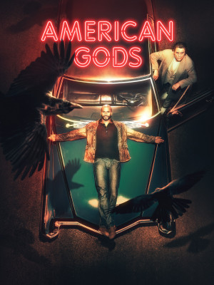 | 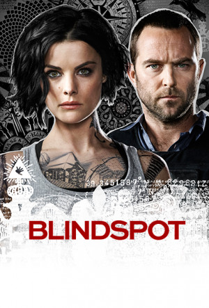 | 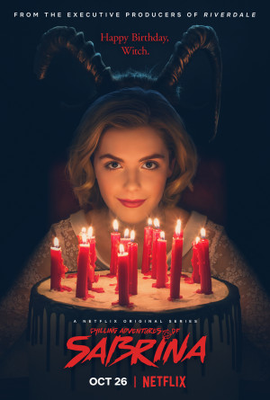 | ||
|---|---|---|---|---|
| The Blacklist | Supergirl | American Gods | Blindspot | Chilling Adventures of Sabrina |
| The series revolves around the former government client Raymond Reddington (James Spader) famous for "Red", who managed to escape long from the authorities that want to arrest him. Reid suddenly surrenders to the FBI and is offered to help them catch a terrorist on condition that he talks only to Elizabeth Keane (Megan Boone), a young FBI crime analyst who has just completed her training at the Quantico base. | The role of the events in the series of adventure and science fiction, about the girl Linda Danvers (Melissa Benoist), which is blessed with extraordinary abilities, and extraordinary, trying to use these capabilities in the right and useful to humanity. | Shado, a man with a past, wants only a quiet, trouble-free life with his wife, but one day he realizes that his wife was killed in a horrific accident. Is trying to travel to his home to prepare her funeral, while a violent storm is about to hit his plane and deprive him of this opportunity .. Surprised Shadow with a man sitting in the seat next to him on the plane calls himself (Mister Wednesday), which warns him of a serious storm coming, will change everything His life when he blows. | The role of the events of the serial about finding a suitcase in New York's Times Square, and there is suspicion that a bomb inside it, and when the police opened it find a girl tattooed on her body tattooed as an officer in the FBI, but the memory is lost, Thrill and excitement. | It is about re-imagining the origin of the charming adventures of Sabrina, and the latter seeks a great ambition to expel evil spirits, putting her face in front of her double personality. |
| 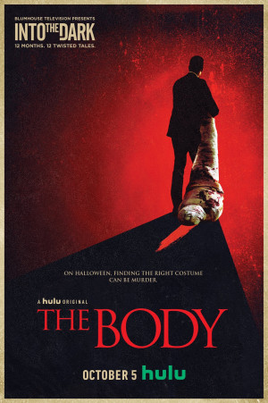 | 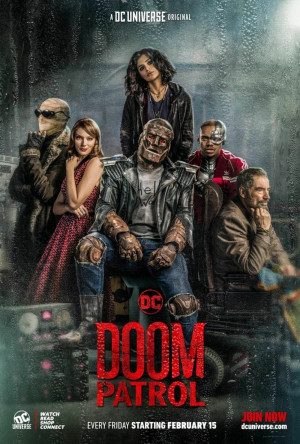 | 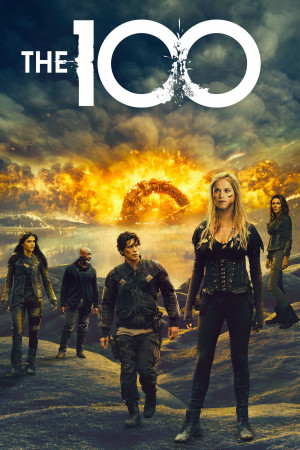 | 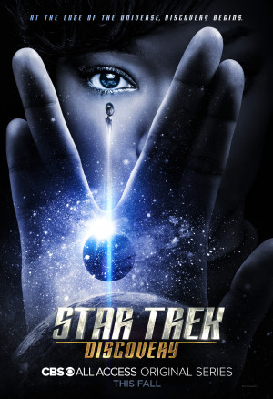 | 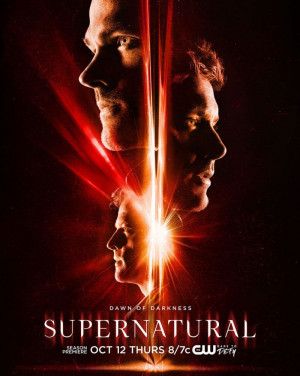 |
|---|---|---|---|---|
| Into the Dark | Doom Patrol | The 100 | Star Trek: Discovery | Supernatural |
| A horror anthology series with each episode inspired by a holiday | The adventures of an idealistic mad scientist and his field team of superpowered outcasts | After 97 years of devastating nuclear war that destroyed civilization and progress, the series tells the story of 12 spacecraft with all the rest of humanity trying to revive the planet again. |
Ten years before Kirk, Spock, and the Enterprise, the USS Discovery discovers new worlds and lifeforms as one Starfleet officer learns to understand all things alien |
The series revolves around two brothers whose mother died and stayed with their father, who is thought to have caused the Shiites to kill their mother. In this sense, the father is forced to hunt evil in all its forms, and one of his sons participates in it. The other moves away from his father and brother to live in peace with his girlfriend. The two brothers then meet again to search for their father, who suddenly disappears under mysterious circumstances. From here they begin their journey across the country to search for their father and during their quest they encounter monsters, ghosts and many vampires |
| 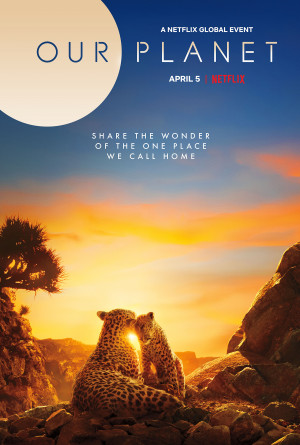 | 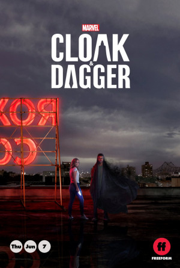 | 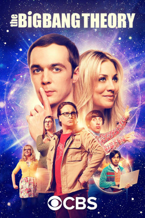 | 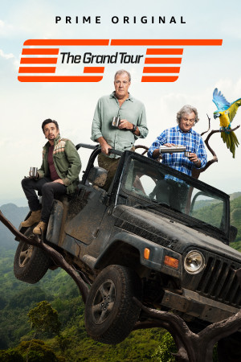 | 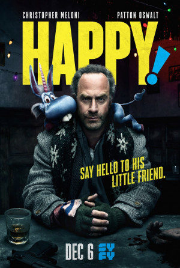 |
|---|---|---|---|---|
| Our Planet | Cloak & Dagger | The Big Bang Theory | The Grand Tour | Happy! |
| Documentary series focusing on the breadth of the diversity of habitats around the world, from the remote Arctic wilderness and mysterious deep oceans to the vast landscapes of Africa and diverse jungles of South America. |
Two teenagers from a different environment who acquire supernatural power during a romantic relationship will realize that they work better when they are together; but their feelings make their world more challenging. |
Leonard Hofstadter (Johnny Galicki) and Sheldon Cooper (Jim Parsons) are both high-ranking and cultured worlds living in Pasadena, California, who are also friends with totally unconventional ways of life. Both Leonard and Sheldon spend their time watching science fiction movies, conducting experiments and reading books. For women, Leonard and Sheldon are out of competition. The life of Leonard and Sheldon turns upside down as Benny (Kelly Coco) moves into the same building and Leonard likes it |
Follow Jeremy, Richard, and James, as they embark on an adventure across the globe, driving new and exciting automobiles from manufacturers all over the world. |
An injured hitman befriends his kidnapped daughter's imaginary friend - a perky blue flying unicorn |